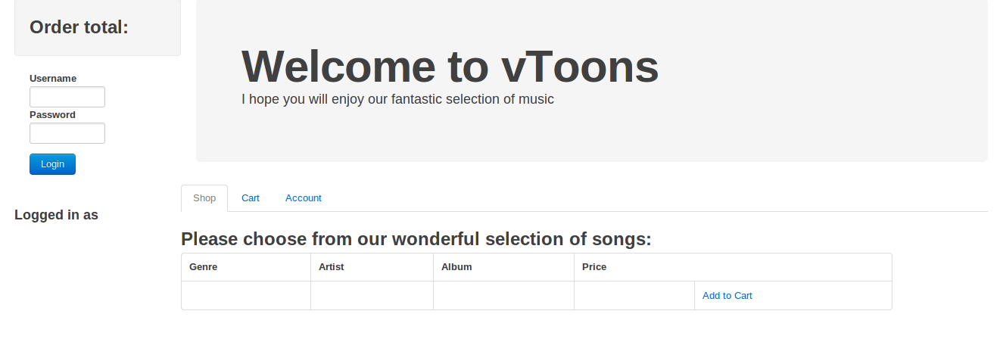
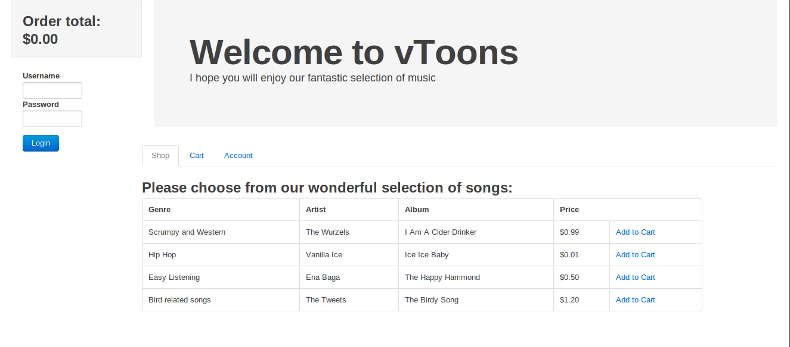
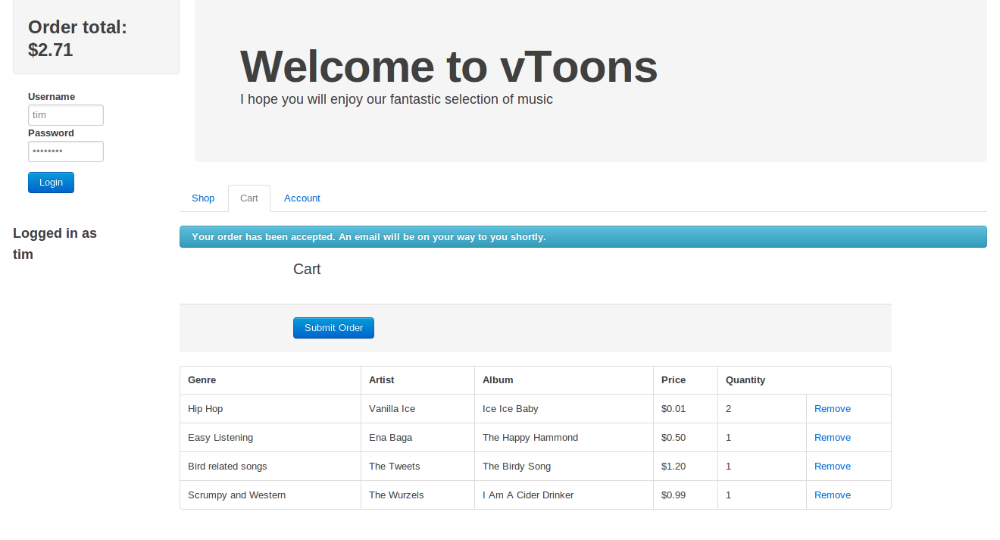

Groovy Web Application Tutorial
In this tutorial we're going to write a 'real-time' web-application using vert.x.
The application is a shop application called "vToons" which allows you to buy music tracks online.
The application architecture is very simple; it consists of a modern client-side JavaScript MVVM (MVC) application which communicates using the Vert.x event bus with a persistor module on the server. The persistor is used to store the music catalogue and also for persisting orders.
It also consists of a web server module on the server which serves the static resource - html, css and js files, and which bridges the server side event bus with client side JavaScript.
The application does not require any custom server side modules to be written. You just write your client side JavaScript and it communicates with the persistor as if it was running locally.
The only thing that needs to be written on the server is a simple script which tells Vert.x to start the persistor and the web server. The script can also contain configuration needed for the application.
In this version of this tutorial we've written the script in Groovy. If you'd prefer to write it in Ruby or JavaScript, please see the Ruby or JavaScript version of this tutorial.
If you'd rather just run the complete code, the working example is present in the webapp directory of the examples in the distribution. Read the README there for instructions on how to run it.
There's also a version of the tutorial using AngularJS in the angularjs directory of the distribution.
You can also see the code in github.
Step 1. Install vert.x
If you haven't yet installed vert.x, do that now.
The rest of the tutorial will assume you have installed vert.x in directory VERTX_HOME.
Step 2. Get the Web Server running
We're going to need a web server to serve the static resources. Let's get one running. With Vert.x you can write a web server in just a few lines of code, but we're not going to do that. Instead Vert.x ships with an out-of-the-box web server module, so we'll just use that.
We'll create a script which starts the web server module and also contains the configuration.
Open a text editor and copy the following into it:
def webServerConf = [
port: 8080,
host: 'localhost'
]
// Start the web server, with the config we defined above
container.deployModule('vertx.web-server-v1.0', webServerConf);
The call to deployModule tells Vert.x to deploy an instance of the vertx.web-server module. If it's not already installed, Vert.x will automatically install it from the module repository. 'For detailed information on modules please see the modules manual.
Save it as App.groovy.
Now, create a directory called web with a file index.html in it:
mkdir web echo "<html><body>Hello World</body></html>" > web/index.html
And run the web server:
vertx run App.groovy
Point your browser at http://localhost:8080. You should see a page returned with 'Hello World'.
That's the web server done.
Step 3. Serve the client-side app
Now we have a working web server, we need to serve the actual client side app.
For this demo, we've written it using knockout.js and Twitter bootstrap, but in your apps you can use whatever client side toolset you feel most comfortable with (e.g. jQuery, backbone.js, ember.js or whatever). Any client side JavaScript will do.
The purpose of this tutorial is not to show you how knockout.js or Twitter bootstrap works so we won't delve into the client app in much detail.
Copy the client side application from the vert.x installation into our web directory as follows:
cp -r $VERTX_HOME/examples/groovy/webapp/web/* web
Now, refresh your browser. The client application should now be served.
Of course, it won't do anything useful yet, since we haven't connected it up to anything, but you should at least see the layout. It should look like this:

Take some time to click around the app. It's pretty self explanatory.
In the centre there's a set of tabs which let you flick between the shop, and your cart.
On the left hand bar there's a form which allows you to login.
Step 4. Get the Persistor up and running
The Vert.x module repository contains a module called vertx.mongo-persistor.
This module allows you to store/update/delete/find data in a MongoDB database. (For detailed info on modules please see the modules manual).
We're going to use a persistor in our application for a few different things:
- Storing the catalogue of track data.
- Storing usernames and passwords of users
- Storing orders
Add a line to App.groovy which starts the persistor, so the file now looks like:
def webServerConf = [
port: 8080,
host: 'localhost'
]
container.with {
// Deploy a MongoDB persistor module
deployModule('vertx.mongo-persistor-v1.2')
// Start the web server, with the config we defined above
deployModule('vertx.web-server-v1.0', webServerConf)
}
Of course you'll also need to make sure you have installed a MongoDB instance on the local machine, with default settings.
Now CTRL-C the web server you started earlier and run App.groovy with
vertx run App.groovy
The persistor and web server should be running and it should serve the client application as before.
Step 5. Connecting up the client side to the Event Bus
So far we have a web server running, and a server side persistor listening on the event bus, but not doing anything.
We need to connect up the client side so it can interact with the persistor via the event bus.
To that we use a SockJS bridge.
SockJS is a technology which allows a full-duplex WebSocket-like connection between browsers and servers, even if the browser or network doesn't support websockets.
You can create a SockJS server manually in the Vert.x API (see the core manual for more information on this), but the vertx.web-server module contains bridge functionality built in, so we're just going to tell it to activate the bridge. This is done in the configuration we specify to the web server.
Edit the web server configuration so it looks like:
def webServerConf = [
// Normal web server stuff
port: 8080,
host: 'localhost',
bridge: true,
inbound_permitted: [
// Allow calls to get static album data from the persistor
[
address : 'vertx.mongopersistor',
match : [
action : 'find',
collection : 'albums'
]
]
],
outbound_permitted: [ [:] ]
]
Setting the bridge field to true tells the web server to also act like an event bus bridge as well as serving static files.
The other new things here are the inbound_permitted and outbound_permitted fields. These are arrays of JSON objects which determine which event bus messages we're going to allow through the client side. The bridge basically acts like a firewall and only allows through those messages that we want to come through. inbound_permitted determines which messages we are going to allow from the client --> server, and outbound_permitted determines which messages we are going to allow from server --> client.
If we allowed the client to send any messages to the persistor, it would be able to do things like delete all data in the database, or perhaps view data it is not entitled to see.
(For detailed information on how the firewall works, please see the core documentation.)
Initially, we only want to allow through requests to the persistor to load the album data. This will be used by the client side application to display the list of available items to buy.
The above configuration will only allow messages from the client that are addressed to vertx.mongopersistor (that's the event bus address of the MongoDB persistor), and which have a field action with a value find, and a field collection with a value albums.
Save the file.
Step 6. Inserting the Static Data
We're almost at the point where the client side app can see the catalogue data. But first we need to insert some static data.
To do this we need a script which inserts catalogue and other data needed by the application in the database. It does this by sending JSON messages on the event bus to the persistor.
Copy StaticData.groovy into your directory as follows:
cp $VERTX_HOME/examples/groovy/webapp/StaticData.groovy .
We want to insert the static data only after the persistor verticle has completed starting up so we edit App.groovy as follows:
deployModule('vertx.mongo-persistor-v1.2') {
deployVerticle('StaticData.groovy')
}
The closure that we're specifying in the call to deployModule won't be invoked until the persistor is fully started. In that function we just load the static data script.
Save the edited App.groovy and restart it.
vertx run App.groovy
Refresh your browser.
You should now see the catalogue displayed in the client side app:

Now there is some stuff to buy, you should be able to add stuff to your cart, and view the contents of your cart by clicking on the cart tab.
Step 7. Requesting data from the server
As previously mentioned, this isn't a tutorial on how to write a knockout.js client-side application, but let's take a quick look at the code in the client side app that requests the catalogue data and populates the shop.
The client side application JavaScript is contained in the file web/js/client_app.js. If you open this in your text editor you will see the following line, towards the top of the script:
var eb = new vertx.EventBus(window.location.protocol + '//' + window.location.hostname + ':' + window.location.port + '/eventbus');
This is using the vertxbus.js library to create an EventBus object. This object is then used to send and receive messages from the event bus.
If you look a little further down the script, you will find the part which loads the catalogue data from the server and renders it:
eb.onopen = function() {
// Get the static data
eb.send('vertx.mongopersistor', {action: 'find', collection: 'albums', matcher: {} },
function(reply) {
if (reply.status === 'ok') {
var albumArray = [];
for (var i = 0; i < reply.results.length; i++) {
albumArray[i] = new Album(reply.results[i]);
}
that.albums = ko.observableArray(albumArray);
ko.applyBindings(that);
} else {
console.error('Failed to retrieve albums: ' + reply.message);
}
});
};
The onopen is called when, unsurprisingly, the event bus connection is fully setup and open.
At that point we are calling the send function on the event bus to a send a JSON message to the address vertx.mongopersistor. This is the address of the MongoDB persistor module that we configured earlier.
The JSON message that we're sending specifies that we want to find and return all albums in the database. (For a full description of the operations that the MongoDBPersistor module expects you can consult the README.md in the mod-mongo-persistor repository).
The final argument that we pass to to send is a reply handler. This is a function that gets called when the persistor has processed the operation and sent the reply back here. The first argument to the reply handler is the reply itself.
In this case, the reply contains a JSON message with a field results which contains a JSON array containing the albums.
Once we get the albums we give them to knockout.js to render on the view.
Step 8. Handling Login
In order to actually send an order, you need to be logged in.
To handle login we will start an instance of the vertx.auth-mgr which lives in the repository. This is a simple module which handles simple user/password authentication and authorisation. Users credentials are stored in the MongoDB database. Fore more sophisticated auth, you can easily write your own auth module and the bridge can talk to that instead.
To login, the client sends a message on the event bus to the address vertx.basicauthmanager.login with fields username and credentials, and if successful it replies with a message containing a unique session id, in the sessionID field.
This session id should then be sent in any subsequent message from the client to the server that requires authentication (e.g. persisting an order).
When the bridge receives a message with a sessionID field in it, it will contact the auth manager to see if the session is authorised for that resource.
Let's add a line to start the auth-mgr:
Edit App.groovy and add the following, just after where the Mongo Persistor is deployed.
// Deploy an auth manager to handle the authentication
deployModule('vertx.auth-mgr-v1.1')
We'll also need to tell the bridge to let through any login messages:
inbound_permitted: [
// Allow calls to login
[
address: 'vertx.basicauthmanager.login'
],
...
Save, and restart the app.
You can test login by attempting to log-in with username tim and password password. A message should appear on the left telling you you are logged in!

Let's take a look at the client side code which does the login.
Open web/js/client_app.js and scroll down to the login function. This gets trigged by knockout when the login button is pressed on the page.
eb.send('vertx.bridge.login', {username: that.username(), password: that.password()}, function (reply) {
if (reply.status === 'ok') {
that.sessionID(reply.sessionID);
} else {
alert('invalid login');
}
});
As you can see, it sends a login JSON message to the bridge with the username and password.
When the reply comes back with status ok, it stores the session id which causes knockout to display the "Logged in as... " message.
It's as easy as that.
Step 9. Persisting Orders
Persisting an order is equally simple. We just send a message to the MongoDB persistor component saying we want to store the order.
We also need to tell the bridge to let through requests to persist an order. We also need to add the further constraint that only logged-in users can persist orders.
Edit the web server configuration so it looks like:
def webServerConf = [
port: 8080,
host: 'localhost',
bridge: true,
inbound_permitted: [
// Allow calls to login
[
address: 'vertx.basicauthmanager.login'
],
// Allow calls to get static album data from the persistor
[
address : 'vertx.mongopersistor',
match : [
action : 'find',
collection : 'albums'
]
],
// And to place orders
[
address : 'vertx.mongopersistor',
requires_auth : true, // User must be logged in to send let these through
match : [
action : 'save',
collection : 'orders'
]
]
],
outbound_permitted: [ [:] ]
]
Setting the requires_auth field to true means the bridge will only let through the message if the user is logged in.
Ok, let's take a look at the client side code which sends the order.
Open up web/js/client_app.js again, and look for the function submitOrder.
that.submitOrder = function() {
if (!orderReady()) {
return;
}
var orderItems = ko.toJS(that.items);
var orderMsg = {
sessionID: that.sessionID(),
action: "save",
collection: "orders",
document: {
username: that.username(),
items: orderItems
}
}
eb.send('vertx.mongopersistor', orderMsg, function(reply) {
if (reply.status === 'ok') {
that.orderSubmitted(true);
// Timeout the order confirmation box after 2 seconds
// window.setTimeout(function() { that.orderSubmitted(false); }, 2000);
} else {
console.error('Failed to accept order');
}
});
};
This function converts the order into a JSON object, then calls send on the event bus to send it to the database where it will get persisted.
Notice that we add a sessionID field to the message with the session id that was returned when we logged in. The bridge requires this field to be set with a valid session id or the message will not make it through the bridge firewall, since we set the requires_auth field to true in the server side config.
When the reply comes back we tell knockout to display a message.
Everything should be in order, so restart the app again:
vertx run App.groovy
Refresh the browser.
Now log-in and add a few items into your cart. Click to the cart tab and click "Submit Order". The message "Your order has been accepted, an email will be on your way to you shortly" should be displayed!
Take a look in the console window of the application. You should see the order has been logged.

Congratulations! You have just placed an order.
Step 11. Securing the Connection
So far in this tutorial, all client-server traffic has been over an unsecured socket. That's not a very good idea in a real application since we're sending login credentials and orders.
Configuring Vert.x to use secure sockets is very easy. (For detailed information on configuring HTTPS, please see the manual).
Edit App.groovy again, and add the field ssl in the web server config, with the value true.
def webServerConf = [ port: 8080, host: 'localhost', ssl: true, bridge: true, ...
You'll also need to provide a key store. The keystore is just a Java keystore which contains the certificate for the server. It can be manipulated using the Java keytool command.
Copy the keystore from the distribution
cp $VERTX_HOME/examples/groovy/webapp/server-keystore.jks .
Now restart the app again.
vertx run App.groovy
And go to your browser. This time point your browser at https://localhost:8080. Note it is https not http.
You'll initially get a warning from your browser saying the server certificate is unknown. This is to be expected since we haven't told the browser to trust it. You can ignore that for now. On a real server your server cert would probably be from a trusted certificate authority.
Now login, and place an order as before.
Easy peasy. It just works
Step 12. Scaling the application
Scaling the web server
Scaling up the web server part is trivial. Simply start up more instances of the webserver. You can do this by changing the line that starts the vertx.web-server module to something like:
// Start 32 instances of the web server!
deployModule('vertx.web-server-v1.0', webServerConf, 32)
(Vert.x is clever here, it notices that you are trying to start multiple servers on the same host and port, and internally it maintains a single listening server, but round robins connections between the various instances.)
More complex web applications
In this simple web application, there was no need to write any custom server side modules, but in more complex applications you might want to write your own server side services which can be used by clients (or by other server side code).
Doing this with Vert.x is very straightforward. Here's an example of a trivial server side service which listens on the event bus for messages and sends back the current time to the caller:
vertx.eventBus.registerHandler("acme.timeService") { message ->
message.reply([current_time: System.currentTimeMillis()])
}
Save this in TimeService.groovy, and add a line in your App.groovy to load it on startup.
Then you can just call it from client side JavaScript, or other server side components:
eventBus.send("acme.timeService", null, function(reply) {
console.log("Time is " + reply.current_time);
});
Packaging up your code as a Module
You can package up your entire application, or just individual Verticles as modules, so they can be easily reused by other applications, or started on the command line more easily.
For an explanation of how to do this, please see the modules manual.